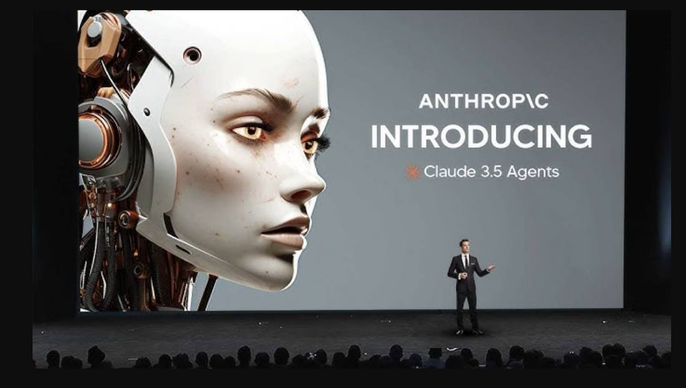

Anthropic Says It Has Met Its Own AI Safety Threshold as AI Speeds Up Its Research
Update to the Anthropic IPO flashes: Anthropic told the SEC in its November 10 IPO prospectus amendment that it has met its own Responsible Scaling Policy threshold for dramatically accelerated AI-driven progress, moving from 'may imminently meet' on November 2 to 'has met' in eight days. The basis is internal estimates and expectations for future models, not observations from current models. METR's November 5 assessment put Anthropic's pace at about 1.9 times its earlier rate since October 2025, with perhaps 80 percent of the speed-up from AI, called the estimates highly uncertain, and said it is plausible the threshold was crossed by July 15. Meeting the threshold triggers additional safeguards, not a halt. IPO pricing is November 18, trading starts November 19 under ticker ANT.

- 01THE DISCLOSURE — Anthropic's November 10 S-1/A Amendment No. 2 states the company has determined it met its Responsible Scaling Policy threshold for dramatically accelerated AI-driven progress.
- 02THE OUTSIDE CHECK — METR's November 5 assessment, based on about 11 weeks inside Anthropic's internal data, puts progress at about 1.9 times the earlier pace since October 2025, calls the estimates highly uncertain, and says it is plausible the threshold was crossed by July 15.
- 03THE WATCHPOINT — The final prospectus and November 18 pricing will show whether the threshold language gains a date or a named model, and whether Anthropic's promised further reports name a verifier for the safeguards.
WHAT HAPPENEDWhat Happened
Update to the Anthropic IPO flashes: Anthropic told the SEC on November 10, 2026 that it has met its own threshold for AI-accelerated AI research. The disclosure sits in Amendment No. 2 to its IPO prospectus, filed days before the company is due to price a listing that could value it at about $1.4 trillion. It is the most consequential safety disclosure Anthropic has made in the IPO process, and also the hardest to check, because the basis is what the company expects from future models rather than what it has observed from current ones.
The wording moved three times in fifteen days. The original S-1 of October 26 said Anthropic might not notice a significant acceleration in its own development until after it had happened. The first amendment of November 2 said its internal estimates indicated it may imminently meet the threshold in its Responsible Scaling Policy for dramatically accelerated progress attributable to AI, and that no current model had been designated as exceeding it. The second amendment of November 10 says Anthropic has made a determination that it has met the threshold. The company says it continues to assess the underlying data, is evaluating what meeting the threshold implies, and will release further reports.
The threshold, under version 3.4 of the Responsible Scaling Policy in force since July 8, 2026, is met by one of two routes: AI that can replace the research staff at competitive cost, or a doubling in the pace of progress substantially attributable to AI. The filing's reasoning points to the second route: AI contributing enough to its own development to approximately double the speed at which models improve, effectively compressing two years of AI progress at the 2018 to 2024 rate into a single year. Anthropic also warned that as it leans on Claude to speed itself up, the organization may lose visibility over some internal processes, and it does not expect to safely use Claude to fully autonomously design and build successive generations of frontier models without meaningful human supervision.
The outside assessment points the same way, earlier and with less certainty. On November 5, the evaluation nonprofit METR published an assessment based on about 11 weeks inside Anthropic's internal data. Its central estimate is that Anthropic's measured progress on well-specified tasks has run at about 1.9 times its earlier pace since October 2025, with perhaps 80 percent of the speed-up coming from AI, mostly AI assisting human researchers. METR called the estimates highly uncertain and said it was not ruling on whether the policy threshold had been met, while adding that it is plausible the threshold was crossed by July 15, and that Anthropic's August report may have understated the acceleration. Anthropic used contractual rights to redact evidence from METR's report, and the two sides disagree on how much was cut, so outsiders cannot test either reading against the underlying data.
The disclosure lands in the same document that sets the price. The filing sets the offering at 825 million Class A shares at $70 to $78, raising about $57.75 billion to $64.35 billion, with a $26 billion private placement from seven companies, Google about $10 billion, Nvidia about $10 billion, AMD $2.5 billion, and Broadcom, Micron and Microsoft $1 billion each, plus a TSMC affiliate at about $0.5 billion. Pricing is set for November 18, with trading to start on the Nasdaq on November 19 under the ticker ANT, and the book was already reported multiple times oversubscribed on November 11. Anthropic says it is considering updates to its safety policy to keep humans in control of frontier model development, including rules requiring human review and approval of certain research decisions.
WHY IT MATTERSA disclosure is not a verification
The filing's basis is expectation, which makes the determination real as a statement of intent and unverifiable as a measurement. Anthropic says the threshold is met because of what it expects ahead; METR says observation plausibly supports July. Those readings differ in a way that matters, which is the date from which the policy's obligations apply. If the answer is July, the added safeguards were due months ago. No outsider can settle it because the underlying data is not public and part of the outside evidence is redacted.
The venue cuts both ways. A registration statement is the most legally accountable place a company can make a claim, because misstatements carry liability, and that counts in the disclosure's favor. It is also a marketing document whose largest outside buyers are the suppliers whose returns depend on the acceleration and the compute demand the safety determination describes. What would close the gap is narrow: a date for when the threshold was determined met, an evaluator's statement on what was withheld, and a dated list of safeguards with an outside verifier.
WHAT TO WATCHThe safety line is crossed; the IPO clock keeps running
The final prospectus and the November 18 pricing will show whether the threshold language survives unchanged, or gains a date or a named model. Anthropic has promised further reports under its policy; whether they carry dates and name a verifier, or repeat the filing's language, is the next test of whether the disclosure becomes checkable.
The same week, the IPO book is already multiple times oversubscribed, so the market has so far treated the safety disclosure as a footnote to the pricing. If pricing lands at the top of the range or above it, the threshold debate will stay an inside-baseball argument. If the book softens, expect the filing's risk language, and the redacted METR evidence behind it, to become a live part of the pricing conversation.
SIGNAL JUDGMENT — ANALYSIS'Met' is a claim, not a result
Tokenta Signal's judgment: Anthropic deserves credit for saying so in a filing that carries legal risk, days before a $1.4 trillion listing. But the disclosure is honest and unchecked at the same time. The company moved from close to met in eight days without naming a model, a date, or a consequence, and the outside evidence that could test the claim is partly redacted. Until Anthropic gives a start date, lets an evaluator say what was withheld, and puts deadlines and an outside verifier on the safeguards, the threshold is met on paper and unverified in public. The November 18 pricing will show whether the market prices that gap at all.
WHAT REMAINS UNCERTAINWhat Remains Uncertain
EVIDENCEEvidence
Trak.in report, read in full: Anthropic has acknowledged it has crossed a major AI safety threshold just days before its planned stock market debut, disclosing the development in an amended IPO prospectus filed with US regulators on November 10. The threshold is part of Anthropic's Responsible Scaling Policy; the company said it had determined the threshold had been met based on its expectations for future models and the overall pace of technological progress, rather than solely on the capabilities of current systems. METR had reported Anthropic's AI development capabilities were improving nearly twice as quickly as in October 2025.
PRIMARY SOURCESPrimary Sources
- Trak.in: Claude informs about major AI safety trigger, days before $1.3 trillion IPO
https://trak.in/stories/claude-informs-about-major-ai-safety-trigger-days-before-1-3-trillion-ipo/ - Inshorts: Anthropic confirms major AI safety alert, days before $1.4 tn IPO
https://inshorts.com/en/news/anthropic-confirms-major-ai-safety-alert--days-before--1-4-tn-ipo-1794463376292 - Medium (Baozilla): Met on expectation: the alarm and the price sheet in one document
https://medium.com/@lssmj2014/met-on-expectation-the-alarm-and-the-price-sheet-in-one-document-a184e86d974a